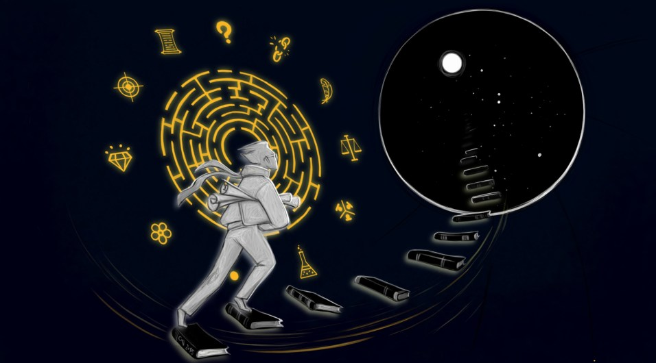

Вы здесь
Главные вкладки
Двенадцать добродетелей рационалиста
Перевод взят из блога Данилы Сентябова.

Первая добродетель — любопытство. Жгучий зуд любопытства влечёт человека к истине вернее торжественных клятв и волевых решений.
Подобно пламени, что рождается из топлива и искры, любопытство возникает там, где незнание сходится с желанием познать. Взгляни на двух искателей. Один уверен, будто уже знает истину. Другой же, зная о своём невежестве, не спешит его устранить. Ни один из них не достигнет многого на Пути, ибо без цели и направления всякое умение бесполезно.
Любопытство стремится уничтожить само себя: нет любопытства, что не жаждет удовлетворения. Величие загадки в том, чтобы быть разгаданной и утратить загадочность. Остерегайся тех, кто признаёт собственное незнание со смирением: есть время признавать невежество и время избавляться от него.
Вторая добродетель — отречение. Сказано: «Что может быть разрушено истиной, не заслуживает спасения»1. Не избегай встречи с тем, что может уничтожить твои убеждения. Мысль, которую ты в ужасе гонишь из сознания, связывает тебя и заключает в рабство. Без страха бросай свои убеждения в огонь испытаний.
Очищай своё сердце от эмоций, растущих из ложных убеждений и пестуй в нём те, что основаны на истине. Если к лицу твоему подносят холодное железо, а ты веришь, что оно раскалено, Путь не приемлет твоего страха. Если к лицу твоему подносят раскалённое железо, а ты веришь, что оно холодно, Путь не приемлет твоего спокойствия.
Источником твоих эмоций должна быть истина, а не ложь. Повторяй снова и снова: «Если железо раскалено, я желаю верить, что оно раскалено. Если железо холодно, я желаю верить, что оно холодно». Легко привязаться к убеждениям, рождающим эмоции; остерегайся таких привязанностей, ибо они могут увести тебя от истины.
Третья добродетель — лёгкость. Доверься ветру фактических подтверждений. Позволь ему нести тебя как осенний лист, не выбирая направления. Опасайся идти против этого ветра. В безнадёжной борьбе ты всё равно будешь отступать пядь за пядью, на каждом шагу ощущая горечь поражения.
Сдавайся истине так быстро, как только сможешь. Заметив за собой малейшую попытку сопротивления, сдавайся. Сдавайся в тот самый миг, когда уловишь, с какой стороны ветер фактов дует против тебя. Верность убеждениям — порок, а не добродетель. Предавай свои убеждения при первой же встрече с более сильным противником.
Если факты для тебя — досадная помеха, ты будешь искать повода освободиться от них. Но итогом станет не свобода, а рабство на цепи у произвольных убеждений. Сверяясь с фактами, отвергай ошибочные убеждения, а не наоборот.
Нельзя составить карту города, сидя дома и накрывшись одеялом с головой. Надо обойти город с широко раскрытыми глазами и честно нанести на бумагу то, что видишь. Если ты, видя город нечётко, трактуешь неопределённость по собственной прихоти, смещая линии левее, правее, выше и ниже — чем ты лучше того, кто рисует город дома под одеялом?
Четвёртая добродетель — беспристрастность. Тот, кто желает верить, спрашивает себя: «Позволяют ли фактические подтверждения верить?». Тот, кто не желает, спрашивает: «Принуждают ли фактические подтверждения верить?». Остерегайся предпочтений, что будут усыплять твой скептицизм по отношению к приятным для тебя утверждениям и пробуждать его при столкновении с неприятными.
Взгляни на того, кто уделяет внимание лишь фактам, говорящим в пользу его взглядов. Чем больше его знания — тем дальше он уходит от истины. Другой избирателен в своей критике. С инквизиторским рвением расчленяя в поисках ошибок одни рассуждения, к другим он проявляет снисхождение. Чем больше он знает о логических ошибках и когнитивных искажениях — тем крепче броня, которой он прикрывает своё невежество.
Если некто начал рассуждение с того, что написал внизу страницы: «Таким образом, цвет неба — зелёный!», уже не важно, что он напишет выше: конечный вывод записан и он либо истинный, либо ложный. Ловкость в аргументации — не рациональность, а рационализация. Интеллект бесполезен для человечества, если используется лишь в борьбе с самим собой.
Рассматривая гипотезу за гипотезой, выслушай, что каждая из них может сказать в свою защиту. Но помни: ты не гипотеза, а судья. Не позволяй себе выступать в защиту какой‑либо стороны: тот, кто уже выбрал сторону, не нуждается в рассуждении. Если ты знаешь пункт назначения, ты уже на месте.
Пятая добродетель — спор. Желающий упасть должен сперва отвергнуть своих друзей, чтобы те не могли помочь ему. Сказав с мудрой улыбкой «я не буду спорить», глупец отвергает помощь и самоустраняется от общественных усилий.
В споре стремись к абсолютной искренности. Это будет полезно не только окружающим, но и тебе. Часть ума, что рождает лукавство, искажая твои слова, искажает и твои собственные мысли.
Не думай, что делаешь одолжение собеседнику, соглашаясь с ним. Если его аргументы сильнее твоих, это он сделал одолжение, поделившись ими. Прими его дар с благодарностью.
Не путай справедливость ко всем сторонам с поиском компромисса. Истина не раздаётся поровну между сторонами перед началом спора. Беспристрастно рассмотрев аргументы, стремись к истине, а не к равному учёту всех мнений.
Нельзя приблизиться к истине с помощью кулаков и оскорблений. Стремись провести эксперимент, чтобы сама реальность рассудила, кто прав.
Шестая добродетель — эмпиризм. Корни знания — в наблюдениях, а плоды его — точные предсказания. Где то дерево, что растёт без корней? Где то дерево, что питает нас без плодов?
Если дерево падает в безлюдном лесу, слышен ли звук его падения? Один скажет: «Да, слышен, ибо падение создаёт звуковые волны в воздухе». Другой возразит: «Нет, не слышен, ибо нет мозга, в аудиторной области которого возбудились бы нейроны». Хотя один говорит «да», а другой «нет», их спор лишён содержания, ведь ожидаемый ими опыт взаимодействия с лесом совпадает.
Не думай о том, каких убеждений придерживаться. Думай об экспериментальных результатах, которые ты ожидаешь увидеть. Никогда не теряй из виду реальный предмет спора: различия в ожидаемых наблюдениях. Не позволяй увести себя в сторону и перескочить на обсуждение личностей спорщиков или бравирование силой своей рациональности.
Сказано о спортивных матчах: «Губят не ошибки в выполнении замысловатых техник. Губит элементарное: потеря мяча из виду»2. Не позволяй словам ослепить себя. Очисти свои мысли от слов и останутся лишь ожидаемые результаты наблюдений.
Седьмая добродетель — простота. Сказано: «Совершенство достигается не тогда, когда нечего добавить, а тогда, когда нечего отнять»3. Ищи простоты в убеждениях, проектах, планах и доказательствах.
Чем сложнее высказанное тобой убеждение, чем больше в нём деталей, тем больше вероятность ошибки, дискредитирующей всю конструкцию. Каждое отдельное утверждение утяжеляет твою ношу, и если эту ношу можно облегчить — сделай это! Нет такой соломины, которая не могла бы сломать тебе спину.
Самая надёжная шестерня в машине — та, которой там нет. Чем меньше паутина — тем она прочнее. Цепь из тысячи шагов приведёт тебя к верному выводу лишь тогда, когда каждый шаг безошибочен. Но если ошибка в самом начале — куда ты придёшь? Математикам известно, что целые горы праведных деяний не искупят единственного греха. Не ослабляй внимания ни на секунду.
Восьмая добродетель — скромность. Быть скромным — значит заранее принимать меры в ожидании провала своих планов. Тот, кто признаёт способность ошибаться, но никак не пытается её скомпенсировать, движим гордыней, а не скромностью. Демонстрируя напускное смирение, он упивается собственной мнимой добродетелью.
Кто воистину скромен? Тот, кто неустанно готовит себя к самым катастрофическим ошибкам в собственных убеждениях и расчётах.
Мышление миллионов людей настолько слабо, что даже начинающий рационалист легко побеждает их в споре, преисполняясь гордыней и переоценивая собственные умения. Нет славы в том, чтобы быть выше других. Лучший физик Древней Греции не смог бы рассчитать траекторию падающего яблока. Вселенная не подбирает нам задачи по способностям и оценивает по абсолютной шкале. Предельные усилия лучших из нас могут быть недостаточны для удовлетворительной оценки.
Не успокаивай себя тем, что другие справляются хуже. Сравнивая себя с другими, ты не увидишь искажений, общих для всех людей. Быть человеком — значит совершить десять тысяч ошибок. Нет в мире того, кто был бы достаточно хорош. Совершенство недостижимо.
Девятая добродетель — перфекционизм. Чем больше ошибок ты исправишь в себе, тем больше заметишь новых. Чем тише станет твой ум, тем лучше ты будешь различать шумы и помехи.
Замечая ошибки своего ума, знай — это признаки того, что тебе следует искать выход на следующий уровень. Примиряясь со своими ошибками, вместо того, чтобы корректировать себя, ты не сможешь выйти на новый уровень и не увидишь другие, менее явные ошибки. В любом искусстве и ремесле тот, кто не ищет совершенства, остановится, не сделав и первых двух шагов.
Недостижимость совершенства не оправдывает того, кто отказался к нему стремиться. Поставь для себя самую высокую планку, которую только можешь вообразить и без устали думай, как поднять её ещё выше. Не довольствуйся почти правильным ответом. Всегда ищи абсолютно правильный, точный ответ.
Десятая добродетель — точность. Пусть некто скажет: искомое число лежит в пределах от 1 до 100. Другой скажет: число лежит между 40 и 50. Если искомое — 42, оба будут правы. Но второе предсказание полезнее и способно выдержать более строгую проверку.
Что верно для одного яблока, может быть неверно для другого. О конкретном яблоке можно сказать больше, чем обо всех яблоках мира. Узкое утверждение режет глубже, подобно кромке лезвия.
Составляя карту, стремись не к широте мышления, а к его узости. Помни, что Путь — точное искусство. Пусть твоё движение к истине будет не шагом, но танцем. Каждое движение этого танца должно быть выверено до миллиметра. Каждый новый факт должен изменить твои убеждения на строго определённую величину.
Какова эта величина? Чтобы определить её, изучи теорию вероятностей. Даже если ты не можешь сделать точный расчет, понимание лежащей в основе математики даст уверенность в том, что движения твоего танца точны и в них нет места для личных прихотей и капризов.
Одиннадцатая добродетель — эрудиция. Изучай науки и впитывай в себя их силу. Пусть эта сила станет твоей собственной! Каждая область знаний, поглощённая тобой, делает тебя больше. Если ты проглотишь достаточно наук, зазоры между ними сократятся и твои знания обретут цельность. Взрасти в себе ненасытность и станешь обширнее гор!
Важнее всего усвоить математику и науки, связанные с рациональностью: эволюционную психологию, психологию эвристик и когнитивных искажений, социальную психологию, теорию вероятностей, теорию принятия решений. Это необходимо, но недостаточно. Искусство должно иметь внешнюю цель, иначе оно вырождается в бесконечную рекурсию.
***
Превыше этих одиннадцати добродетелей та, что не имеет имени.
Сказано4:
Подняв меч, думай о том, как поразить им противника, чего бы это ни стоило. Атакуя и парируя, нанося удары и делая выпады, рази противника тем же движением.
Не отклоняйся от цели. Думая о том, как атаковать и парировать, как наносить удары и делать выпады, ты не поразишь противника. Прежде всего думай о том, как каждым своим движением пройти через защиту противника и рассечь его плоть.
Каждым движением своего ума стремись рассечь ошибочные суждения и достигнуть истины. Прежде всего думай о том, чтобы сделать свою карту точным отражением территории. Если истинный ответ не получен, что толку в том, что твои действия были корректны?
Как улучшить своё понимание рациональности? Постоянно повторяя «надо быть рациональнее», можно лишь укрепить ошибочное понимание. Кто‑то считает, что рационально верить словам Великого Учителя. Допустим, Великий Учитель сказал: «Цвет неба — зелёный!», однако, подняв глаза, ты видишь голубой. Если ты думаешь «пусть небо и выглядит голубым, но Путь рационалиста в том, чтобы верить словам Учителя», ты лишаешься возможности обнаружить свою ошибку.
Не спрашивай себя, пристало ли Идущему делать то или другое. Спрашивай, какого цвета небо — зелёного или голубого. Говорящий о Пути слишком много не уйдёт по нему далеко.
Можно попытаться дать имена высшим принципам: «карта, отражающая территорию», «опыт успехов и неудач» или «байесианская теория принятия решений». Но всякое описание может быть некорректным. Как осознать свою ошибку? Сравнивая свои описания с тем, чему нет имени и нет описания.
Годами практикуя техники рациональности, подчиняя свой ум строжайшей дисциплине и самоограничениям, можно надеяться однажды заметить проблеск истинного содержания. К тебе придёт понимание, что все техники суть одна техника. Ты будешь двигаться свободно и верно, не чувствуя ограничений, ставших частью твоей натуры. Сказано: «Познав силу природы, ты движешься в едином ритме со Вселенной. Твои выпады естественны и точны. Ты поражаешь противника, как дышишь. В этом Путь Пустоты»5.
Вот двенадцать добродетелей рационалиста:
любопытство, отречение, лёгкость, беспристрастность, спор, эмпиризм, простота, скромность, перфекционизм, точность, эрудиция и безымянная пустота.
Обсудить перевод можно в комментариях к оригинальной записи.
- 1. Патрисия Ходжелл, из книги «Seeker’s Mask»
- 2. Джерри Кливер (Jerry Cleaver), из книги «Immediate Fiction».
- 3. Антуан де Сент‑Экзюпери, из книги «Планета людей».
- 4. Миямото Мусаси, из «Книги пяти колец».
- 5. Миямото Мусаси, из «Книги пяти колец».
- Короткая ссылка сюда: lesswrong.ru/33